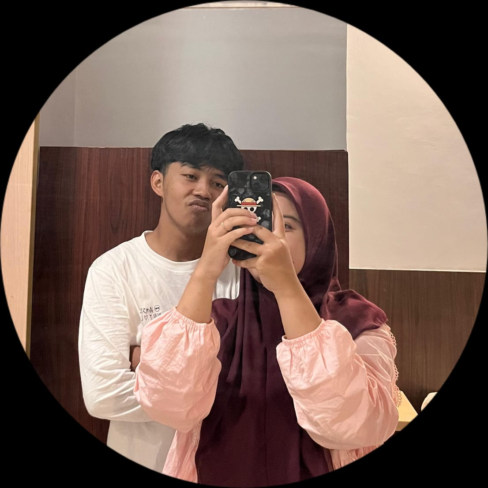
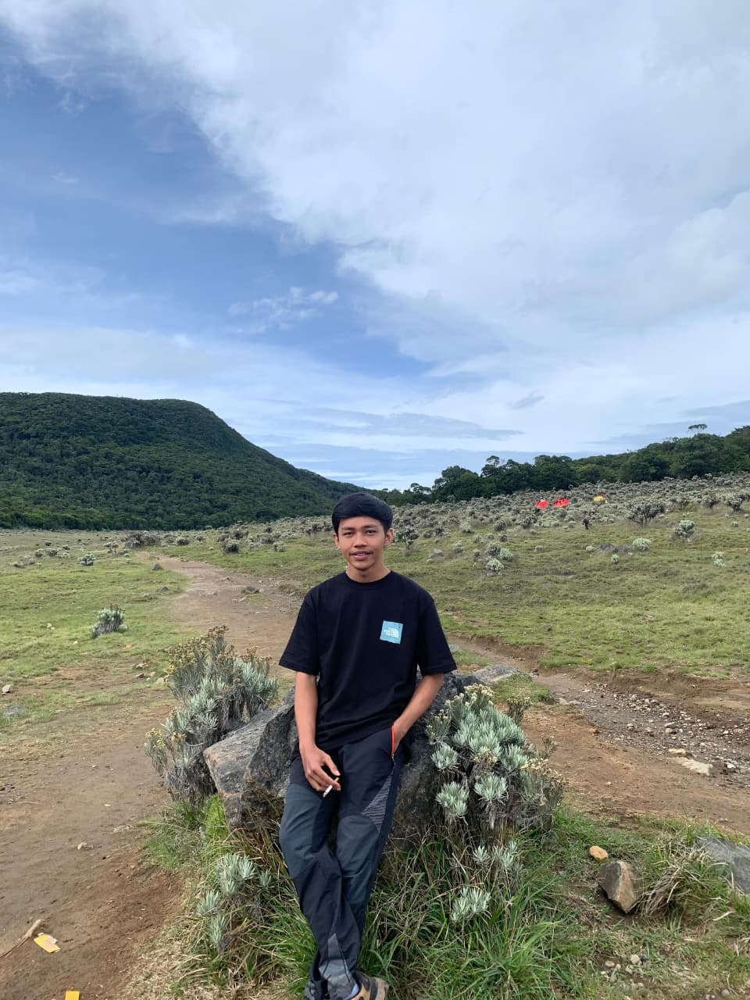
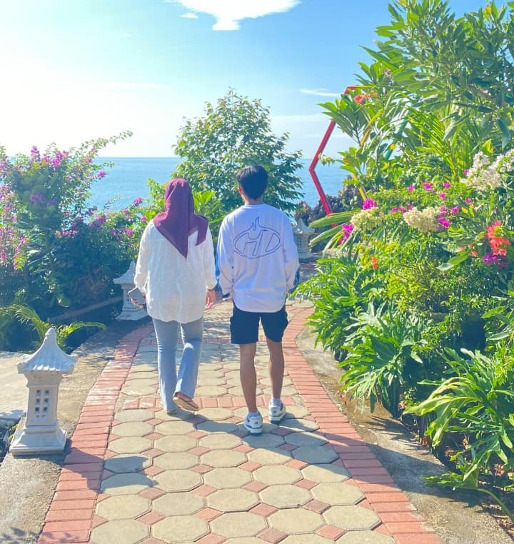
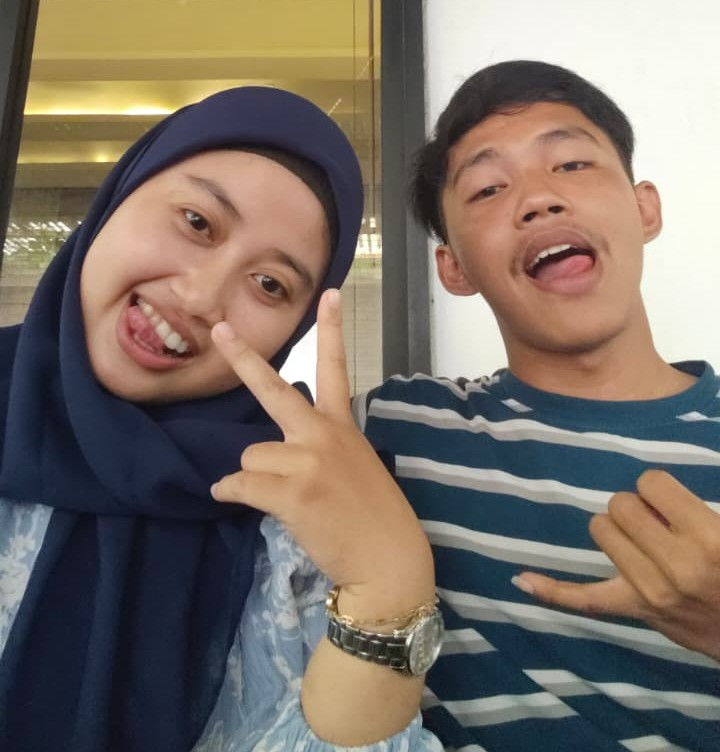
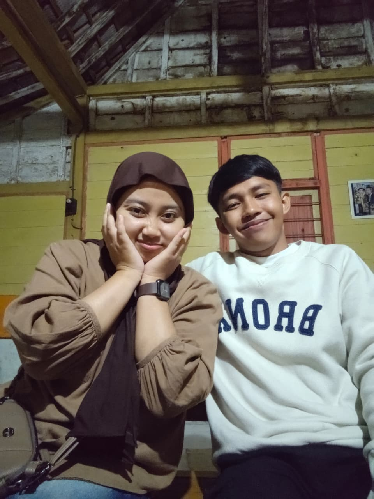
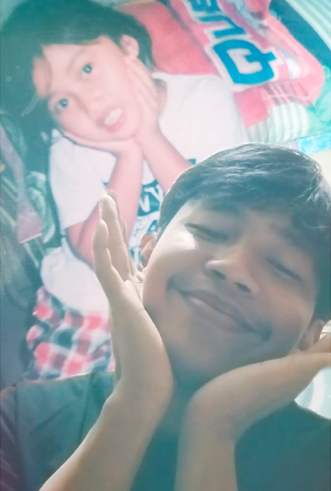
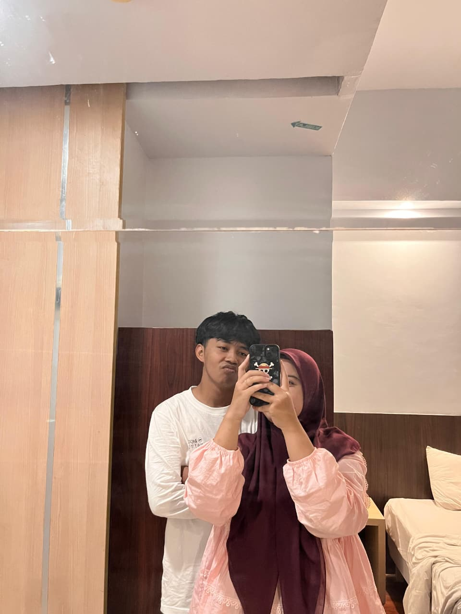

Habis tu baru lanjut ke halaman specialnya hehehe...
Maaf ya sayang desain webnya ngasal karna buru-buru hehehe.... 🙏🙏
Ingat kan, Bulan ini ada 2 hari spesial ? 💖
Happy Anivv ke 1 sayanggg dan ya pastinya tdk lupa dg hari sepecial mu itu Selamat Ulang Tahun Sayangkuuu Semoga dilancarkan segala hal baik yg kmu lakukan dan yg pasti dilancarkan rejekimu hehehe.... biar bs jajanin aku wkwkwk bercandaa ay 🌷 KLIK TANGGALNYA YAK BIAR TAU ISINYA HEHEHE....WLEEE JANGAN LUPAAA DI KLIK SATU-SATU!!!


About You
The 1975
Siap diputar 🎵
Happy Birthday Sayang 💖 Cie dah 22 tahun ni g kerasa kan dah dewasa dah kepala dua hehehe... Tahun kedua ngerayain bareng ni ultahnya meskipun g face to face ya... tpi seenggaknya doaku menyertaimu ay, semoga di tahun ini apa yg kmu cita-citakan tercapai secepatnya, rajin-rajin kuliahnya jangan mls" an udah terlanjur terjun msk mau berhenti di pertengahan jalan ? kan enggak bisa yok bisa msk ngelewati ujian dri kecil sampai segini besarnya g bs nyelesein kuliahnya, ayo lah bisa pasti tk tunggu Gelar Sarjananya biar sama-sama jadi lulusan sarjana hehehe.... semangat kerjane katane mau bikin usaha sendiri, buktiin dong kalau kmu bisaaaa, tpi aku sih yakin kmu pasti bisaaa buktiin karna kmu selalu nepatin omonganmu meskipun agak terlambat dikit hehehe bercanda ay jangan masukin hati ya hehehe... aku nya aja masukin hatimu hehehe.... jangan berhenti olahraga yak inget katane mau hidup sehat, katane mau sehat biar waktu naik gunung g cape biar terbiasa, makanya kurangin lah itu rokoknya, sama jangan suka begadang, apalagi suka minum kopi inget badanmu karna kmu dah lama mengonsumsi rokok, boleh aja karna mungkin itu penghilang stress mu dikala lagi mumet-mumetnya entah karna kerjaan, keluarga, temen, atau apapun itu yg membuatmu mumet kemungkinan aku juga termasuk yg membuatmu mumet iyh kan ay ? inget juga pesenku sholatnya dijaga ya meskipun magrib aja subuh aja dhuhur aja isyak aja ashar aja gpp lah yg penting jangan ditinggal semua sholatnya namanya jga belajar kan harus pelan-pelan untuk jadi terbiasa. sma sih aku jga akhir" ini agak ninggal karna cape sih kyk udh cape di kampus naik turun temuin ini itu akhirnya ya sudah tertinggal lah sholat ku hehehe.... pkok sekali lagi sehat-sehat sayangkuuu.... bahagia selalu, kalau ada apa" ceritaa jangan sampai aku denger kmu melontarkan kalimat "laki-laki tidak bercerita" tk samplok ndasmu wkwkwk kro tk comot lambemu ben kapok ra dibaleni neh... pkok kwi lah penting sehat hehehe... kira-kira kmu dateng g waktu wisuda/sidang skripsi ? sambil berharap wkkwk tpi g berharap banyak karna aku tau kmu sibuk kerja hari weekdays dan weekend kmu jga kuliah g ada waktu hehehe... bercanda ya ay wkwkkw ya udh g yapping lagi selesai takut kebanyakan mls baca kmu nya ay hehehe.... sekali lagi Barrakallah Fii Umrik Sayangku Cintakuuuuu Duniakuuuu yg keduaaa Semestakuuu yg kedua apalagi yaa?? oh gantengkuuuu maniskuuuuu eaaaa saltingg ngantii salto salto iki mesti wkwkwk heheheh 💖 bye bye sekian dari pacarmu yg gembul ini hehehe..... lop yuuuuu seduniaaa 💖
Cie-cie dah satu taun aja nii...padahal dulu g ada pdktan g tau cerita masing-masing tbtb aja pacaran kan org" kaget hehehe mungkin ya dulunya kita sma" sebatas rasa nyaman utk mulai hubungan ini tpi ternyata dri rasa nyaman itu tumbuh rasa sayang eakk sayang banget malah sekarang g tau knp kyk g mau ada yg dekt sma kmu selain aku. makin sayang makin percaya mlh makin takut, makin cemburu, makin makin dah g bs diungkapin heheheh ya maap yak.... Terima kasih sudah melewati 1 tahun ini dengan perbedaan pendapat yg banyak tpi tetep bertahan sampai detik ini. Mksi juga untuk usaha-usaha yg kmu lakukan ay, thanks untuk setaunnya hehehe..... maaf kalau aku blm bisa jadi yg kmu harapkan, mungkin ae aku bagimu terlalu manja, terlalu dramatis, terlalu banyak hal yg terlalu berlebihan untuk aku tanggapi, meskipun kmu sabar tpi ada kalanya kmu ngomong kyk kemarin antara aku karna kmu udh mulai aja ngungkapin perasaanmu bkn hanya aku aja yg ungkapin, tpi secara g langsung kmu mulai dikit" ngungkapin perasaanmu sendiri dan secara g langsung kmu negur secara halus jadi aku paham, jadi maafin aku yaaaa sayang... Sebenere aku g tau kadang mau bilang makasi seprti apa ke kmu mungkin di mata orang lain kmu cowo yg brengsek, nakal, dan g jls dan banyak juga yg mengharapkan aku utk putus g ush deket sma kmu tpi entah knp aku cuma jwb ya udh itu dah pilihanku. ya mungkin kmu belum bs menjalin hubungan romance tpi kmu mungkin berusaha dg caramu sendiri tanpa kmu sadari entah kirim gift, makan dan lain-lain untuk kita berdua hebat sii meskipun banyak masalah tpi tetep masih saling memaafkan mungkin soal komunikasi kita kurang. semoga kita sama-sama saling memaafkan terus dan saling bareng terus saling jaga saling setia satu sama lain meskipun ada jarak dan ada kalanya kita bosen semoga tdk cari kenyamanan ke orang lain masing-masing dan komunikasinya semoga makin baik kedepannya. Love You sayang 💖





Mbul❤️